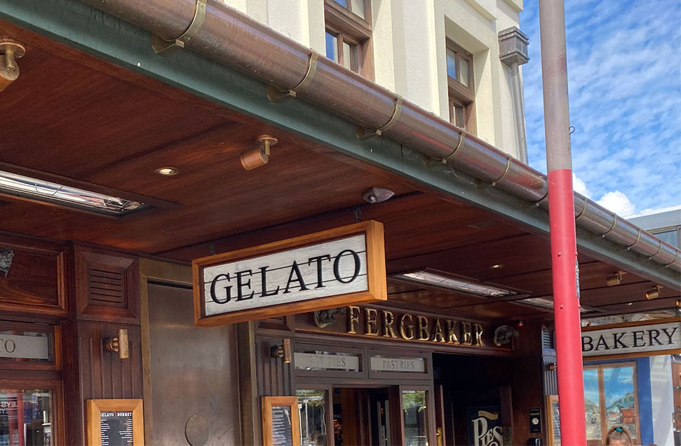

Queenstown is located in the South Island of New Zealand. Nicknamed “the adventure capital of the world”, Queenstown is home to lots of outdoor activities for all to enjoy such as: The Luge, superb bike trails and exploring the beautiful landscapes of Glenorchy. As well as a range of outdoor activities, Queenstown also offers many famous food destinations such as: Ferg’s Burger and the Cookie Time Cookiebar. You can also go to the Queenstown city centre and enjoy some shopping, everything is within walking distance!
Glenorchy is a small little town 45 minutes away from Queenstown via a stunning lakeside drive. There, snow capped mountains, pristine lakes, rivers and national parks around Glenorchy featured prominently in the Lord of the Rings trilogy. If you’re a movie-buff then you can go on the fun and highly educational movie tours run by small companies from Queenstown.
Arrowtown is a small village 20 minutes drive from Queenstown. There, you can experience bike trails and picturesque former gold mining village, explore old miners’ cottages, the restored Chinese village and visit the Lakes District museum. Arrowtown also has a range of cafes, restaurants and bars, boutiques selling homeware, souvenirs and designer clothing.
If you enjoy adventure, participating in the following activities will enhance your Queenstown experience: The luge, iFly and scenic trail walks.
The Skyline Luge: Take on 900m of banked corners, tight turns, tunnels and stomach dropping dips on the Skyline Luge course. Once you reach the bottom, ride the chairlifts and do it all again! You can even visit the Jelly Belly store and treat yourself to the wide variety of the Pick ‘n’ mix jelly beans available.
iFly: Experience the feeling of skydiving indoors! You can book a range of packages, fly in virtual reality and fly high.
Queenstown Trail: There are many trails in Queenstown but the basic Queenstown trail is suitable for people of all ages and abilities. Hire a bike or go for a late evening stroll, enjoy the scenery of Late Wakatipu.
Ferg Burger: Operating since 2001, Ferg Burger is famous for its freshly made burgers. Its wide variety of burgers and unique combinations of fillings attracts tourists from all over the world. Ferg also has a range of other branches including: Mrs Ferg (gelato), FergBaker and Ferg’s Bar.
CookieTime Cookiebar: Enjoy fresh hot cookies, freak shakes, ice-cream, ice-cream sandwiches and even hot chocolates.
Shopping: Queenstown has a compact and easily accessible city centre with all the shopping essentials. From luxury brands, iconic New Zealand design stores, adventure sports equipment to art galleries, book stores and specialty stores there are retail stores for everyone to enjoy and all within walking distance!